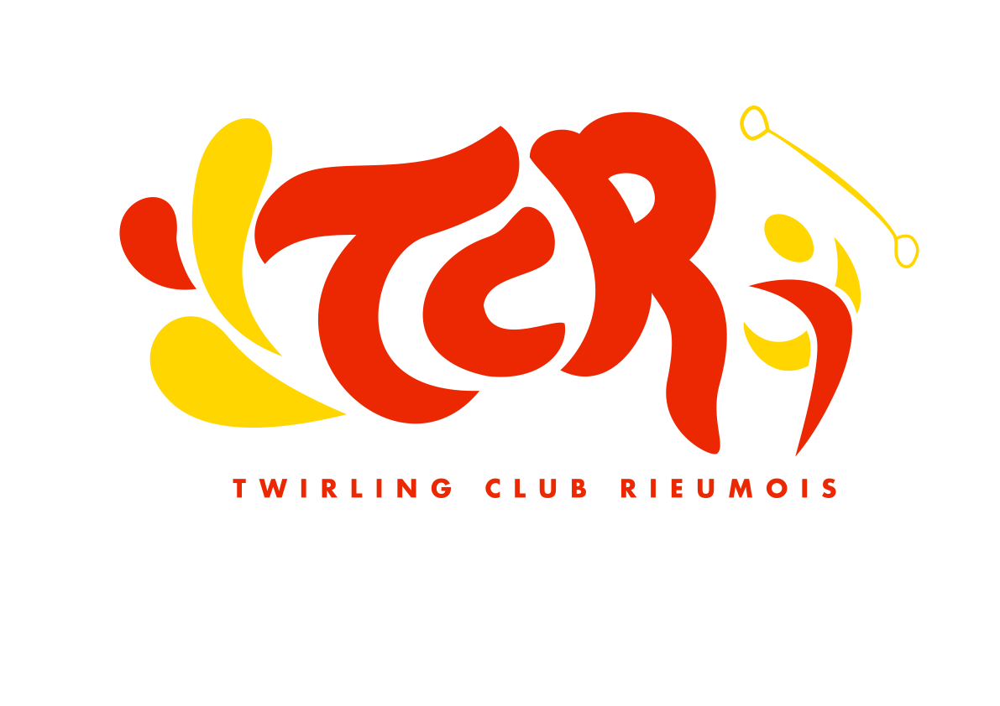

<nav class="flex items-center justify-around my-4 font-bold">
    <a [routerLink]="['/']" routerLinkActive="router-link-active" class="w-20 h-20 border-2 rounded-full border-red-600 bg-gray-200 dark:border-yellow-300 dark:bg-gray-900">
        
    </a>
    <ul class="text-center flex flex-col md:flex-row items-center">
        <li class="p-4 hover:text-red-600" [routerLink]="['team']">Nos équipes</li>
        <li class="p-4 hover:text-red-600" [routerLink]="['sponsor']">Nos partenaires</li>
        <li class="p-4 flex ">
            <label class="inline-flex items-center cursor-pointer h-full">
              <input type="checkbox" value="" class="sr-only peer" (change)="modeChange()">
              <div class="relative w-11 h-6 border-red-600 border bg-gray-900 peer-focus:outline-none peer-focus:ring-2 peer-focus:ring-red-600 rounded-full peer  peer-checked:after:translate-x-full rtl:peer-checked:after:-translate-x-full peer-checked:after:border-white after:content-[''] after:absolute after:top-[2px] after:start-[2px] after:bg-yellow-300 after:border-gray-300 after:border after:rounded-full after:h-5 after:w-5 after:transition-all peer-checked:bg-red-600"></div>
              <span class="ms-3 font-medium text-sm">Light Mode</span>
            </label>
            </li>
    </ul>
</nav>
